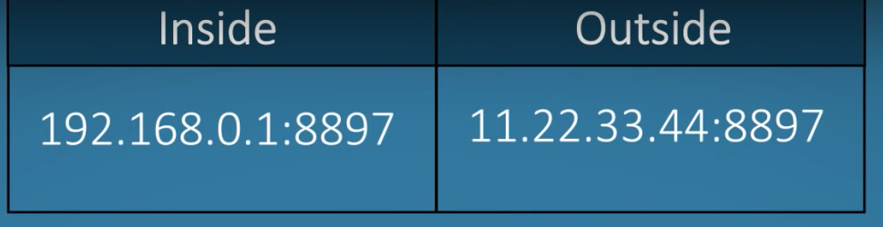

Network Address Translation
Unlike protocols like DNS and DHCP, network address translation or NAT, is a technique instead of a defined standard.
NAT takes one IP and translates it to another, it has few ways to do that, the most common is PAT (port address translation, aka NAT overload)
the NAT changes the private IP of a device on a network to a public global IP of the router (supplied by the ISP), the router keeps the port number
Port preservation is a technique where the source port chosen by a client, is the same port used by the router.
through the port number, the router will know to which device and what app the response should be returned
the router builds a NAT table:

the port chosen by a device is ephemeral port (49152–65535), collision is possible
port forwarding - 1 to 1 port address translation, its kinda like a fixed port per device

see also this nice video
https://www.youtube.com/watch?v=qij5qpHcbBk